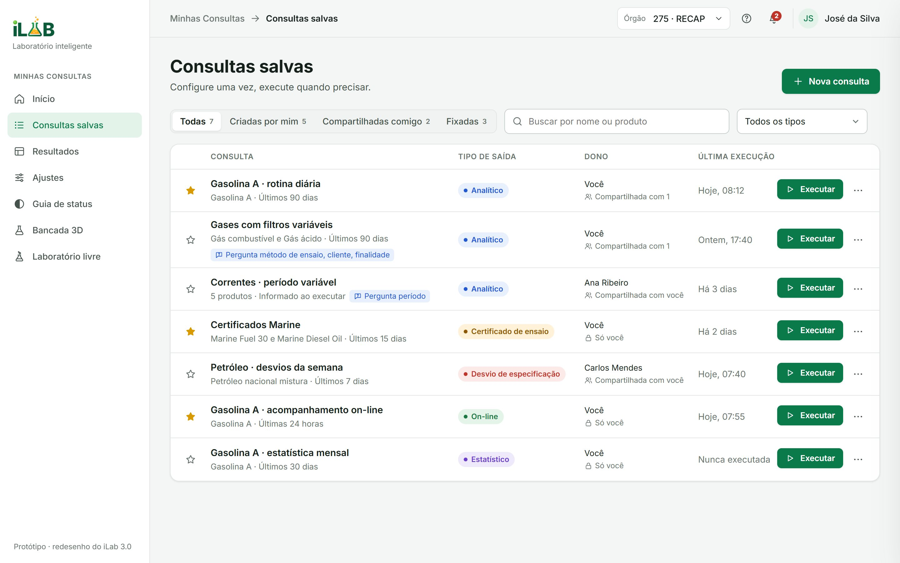
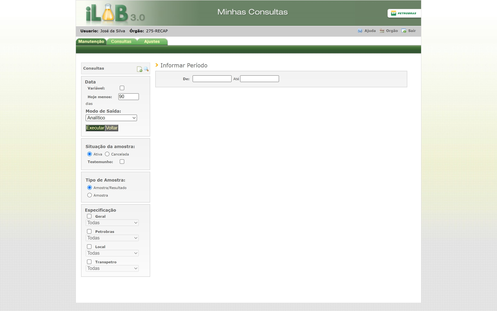
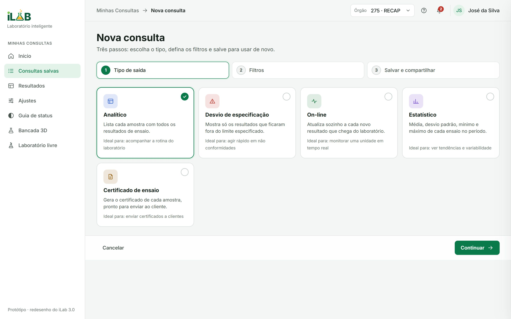
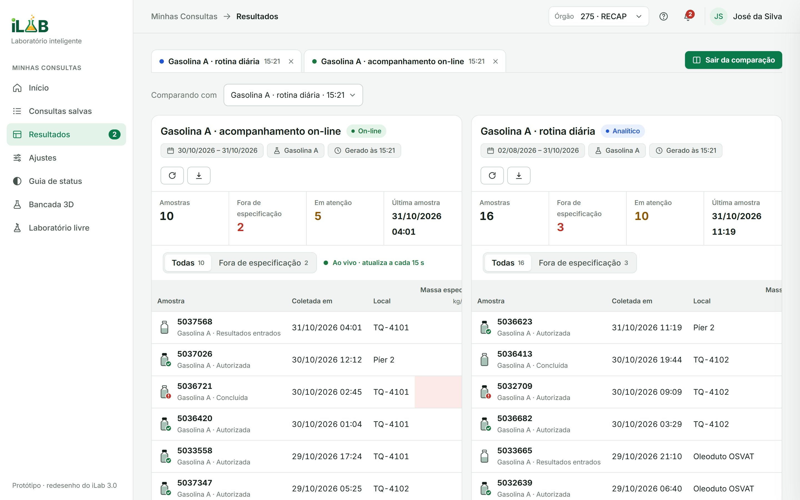
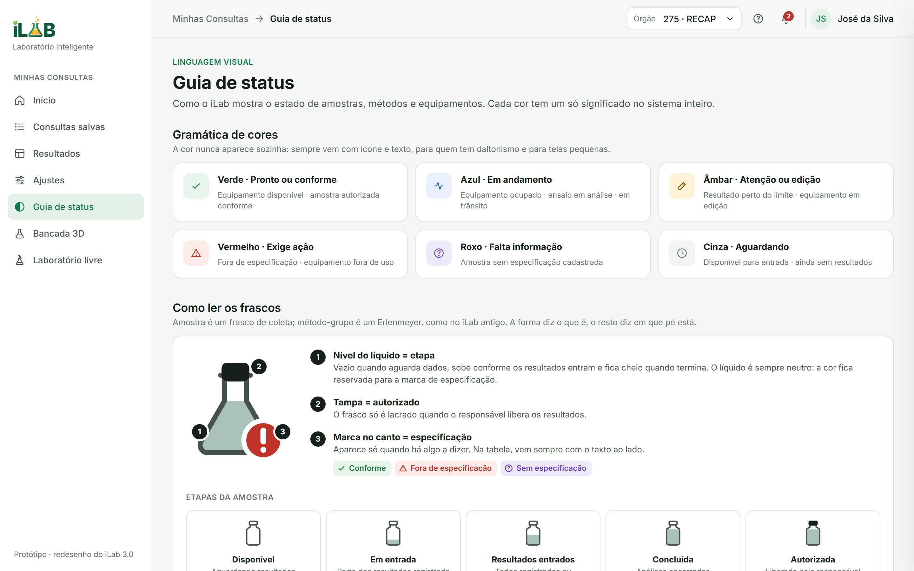
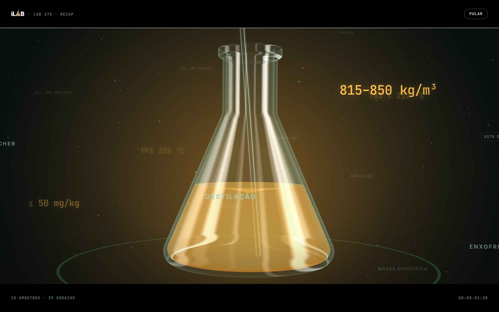
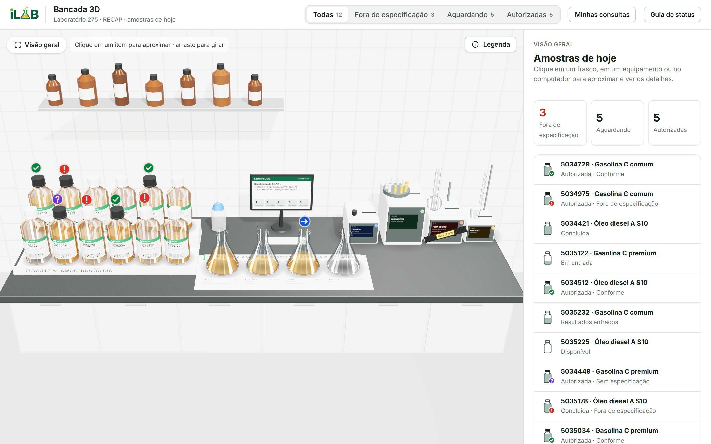
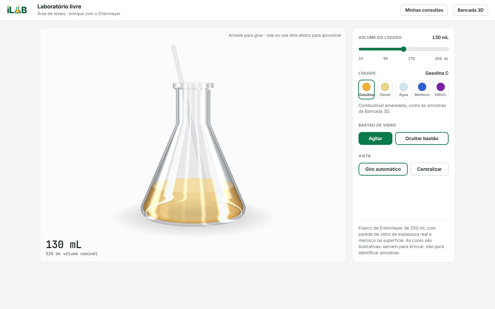

Decision 01 · Saved queries
Configure once. Run whenever.
Queries are saved, pinned and shared with a team. Daily checks become a single click; parameters that change are asked only at run time.
Removes repeated work without removing flexibility.
Product Design · Enterprise UX · Petrobras
How a decade-old laboratory ecosystem became an integrated experience for finding, comparing and acting on refinery quality data.

01The challenge
Refineries decide with lab data: whether a batch of gasoline or diesel meets ANP specification before it ships. That data travelled from sample collection, through LabWare LIMS, into iLAB.
Each with its own logic, on servers kept separately by every refinery.
Daily checks meant re-entering identical parameters, again and again.
Comparing runs relied on notes and parallel spreadsheets.

02Discovery
A quantitative survey across business units and qualitative interviews about routines, systems and friction. The insight: the same result answers different questions depending on who is asking.
From the field operator who collects samples to the supervisor who decides whether operations continue.
Mapped end to end to separate UX problems from technology dependencies.
Repetitive queries and hard-to-compare results, ranked by severity and frequency.
How might we · 01
…let people run their daily queries without configuring the same parameters every time?
Hypothesis: saved, parameterised queries.
How might we · 02
…make comparing lab results easy without losing analytical flexibility?
Hypothesis: every run opens in its own tab.
03Business impact
A confirmed result of the iLAB modernisation, driven by the decision to consolidate refinery servers. My role was making sure that technology shift also became a better experience for the people using it.
04The reimagination
In 2026 I revisited the project to show how far the same strategy can go: a fully working prototype, built with the original research as its backbone.
Personal reinterpretation · all data fictional

2013202605Product experience
Decision 01 · Saved queries
Queries are saved, pinned and shared with a team. Daily checks become a single click; parameters that change are asked only at run time.
Removes repeated work without removing flexibility.
Decision 02 · Compare
Results open as tabs, and any two can be compared in place, with out-of-spec values highlighted where the eye lands.
Builds on a pattern people already know instead of a new comparison tool.

Decision 03 · Status system
Every sample and test state pairs an icon, a colour and a word. A status guide maps each new state to its legacy name, so the change doesn't break anyone's mental model.
Accessible to colour-blind users, consistent across screens.

Decision 04 · Mobile
On a phone, each result row turns into a card with the essentials first (the SAP Fiori pop-in pattern), so a technician can check a sample away from the workstation.
Real responsive design, not a squeezed desktop.
06Spatial experience
The lab, as the technician knows it. Each sample is a bottle on a bench; its liquid and badge show product and status. Click one and the camera moves in to the test details.

Opening · under 5 s · skippable
3D bench · today's samplesGrounded in real chemistry
The bench uses real specification limits and test methods, and the data path a sample actually follows.

Free lab: a playful entry point where anyone can fill, swap and stir the flask.

07AI-powered execution
I used AI as a production partner to go from design decisions to a working product: code, 3D and narrative, at a pace a single designer couldn't reach before.
Designer
Research, information architecture, interaction, visual direction and quality bar.
Exploring narrative, structure and copy.
Building the prototype: interface, three.js scenes, real-screen capture.
Iterating on code in the editor.
Modelling the flask, glass and liquid materials.
Shipped
Responsive web app and 3D bench, live on GitHub Pages.
AI accelerated the making. Every decision about people, problems and priorities stayed mine.
08What I took from it
In enterprise products, an interface is only good if it reflects how the work really happens.
The two most valuable changes took steps away instead of adding new ones.
The savings came from architecture; they only mattered because the work got better too.
Everything shown here is live, from the saved queries to the 3D bench.